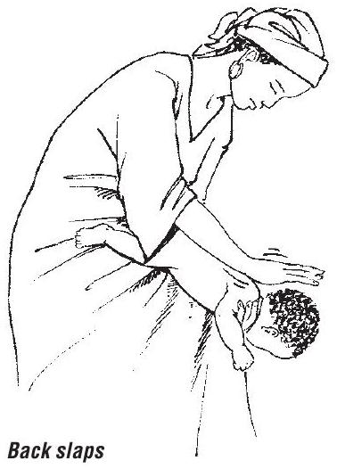
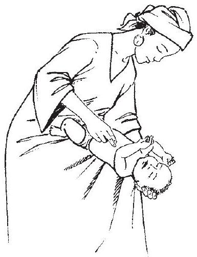
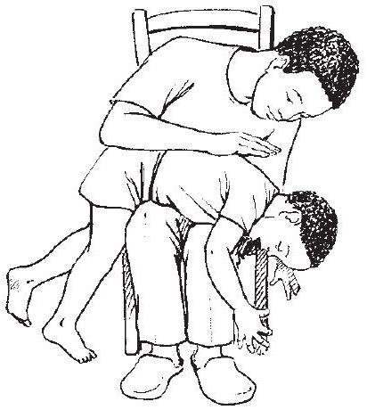
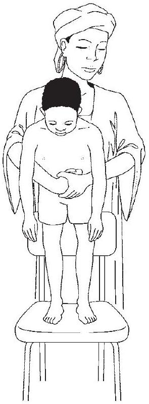
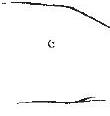
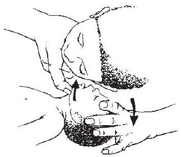
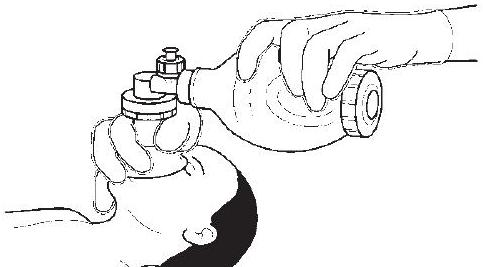

CHAPTER 1
Triage and emergency conditions
- 1.1 Triage
- 1.2 Summary of steps in emergency triage assessment and treatment
- 1.3 Assessment of emergency and priority signs
- 1.4 Emergency treatment for a child with severe malnutrition
- 1.5 Diagnostic considerations for children with emergency conditions
- 1.6 Common poisoning
- 1.7 Drowning
- 1.8 Electrocution
- 1.9 Common causes of envenoming
- 1.10 Trauma and injuries
1.1 Triage
Triage is the process of rapidly screening sick children soon after their arrival in hospital, in order to identify:
- those with emergency signs, who require immediate emergency treatment;
- those with priority signs, who should be given priority in the queue so that they can be assessed and treated without delay; and
- non-urgent cases, who have neither emergency nor priority signs.
Emergency signs include:
- obstructed or absent breathing
- severe respiratory distress
- central cyanosis
- signs of shock (cold hands, capillary refill time longer than 3 s , high heart rate with weak pulse, and low or unmeasurable blood pressure)
- coma (or seriously reduced level of consciousness)
- convulsions
- signs of severe dehydration in a child with diarrhoea (lethargy, sunken eyes, very slow return after pinching the skin or any two of these).
Children with these signs require immediate emergency treatment to avert death.
The priority signs (see p. 6) identify children who are at higher risk of dying. These children should be assessed without unnecessary delay. If a child has one or more emergency signs, don't spend time looking for priority signs.
1.2 Summary of steps in emergency triage assessment and treatment
Steps in emergency triage assessment and treatment are summarized in the charts on pp．5－17．
First check for emergency signs in three steps：
- Step 1．Check whether there is any airway or breathing problem；start im－ mediate treatment to restore breathing．Manage the airway and give oxygen．
- Step 2．Quickly check whether the child is in shock or has diarrhoea with severe dehydration．Give oxygen and start IV fluid resuscitation．In trauma， if there is external bleeding，compress the wound to stop further blood loss．
- Step 3．Quickly determine whether the child is unconscious or convulsing． Give IV glucose for hypoglycaemia and／or an anti－convulsant for convulsing．
If emergency signs are found：
- Call for help from an experienced health professional if available，but do not delay starting treatment．Stay calm and work with other health workers who may be required to give the treatment，because a very sick child may need several treatments at once．The most experienced health professional should continue assessing the child（see Chapter 2，p．41），to identify all underlying problems and prepare a treatment plan．
- Carry out emergency investigations（blood glucose，blood smear，haemoglo－ bin $[\mathrm{Hb}]$ ）．Send blood for typing and cross－matching if the child is in shock， appears to be severely anaemic or is bleeding significantly．
- After giving emergency treatment，proceed immediately to assessing， diagnosing and treating the underlying problem．
Tables of common differential diagnoses for emergency signs are provided from p． 21 onwards．
If no emergency signs are found，check for priority signs：
- Tiny infant：any sick child aged＜ 2 months
- Temperature：child is very hot
- Trauma or other urgent surgical condition
- Pallor（severe）
- Poisoning（history of）
- Pain（severe）
- Respiratory distress
- Restless，continuously irritable or lethargic
- Referral (urgent)
- Malnutrition: visible severe wasting
- Oedema of both feet
- Burns (major)
The above can be remembered from the mnemonic 3TPR MOB.
These children need prompt assessment (no waiting in the queue) to determine what further treatment is needed. Move a child with any priority sign to the front of the queue to be assessed next. If a child has trauma or other surgical problems, get surgical help where available.
1.3 Assessment of emergency and priority signs
Assess the airway and breathing (A, B)
Does the child's breathing appear to be obstructed? Look at the chest wall movement, and listen to breath sounds to determine whether there is poor air movement during breathing. Stridor indicates obstruction.
Is there central cyanosis? Determine whether there is bluish or purplish discoloration of the tongue and the inside of the mouth.
Is the child breathing? Look and listen to determine whether the child is breathing.
Is there severe respiratory distress? The breathing is very laboured, fast or gasping, with chest indrawing, nasal flaring, grunting or the use of auxiliary muscles for breathing (head nodding). Child is unable to feed because of respiratory distress and tires easily.
Assess circulation (for shock) (C)
Children in shock who require bolus fluid resuscitation are lethargic and have cold skin, prolonged capillary refill, fast weak pulse and hypotension.
Check whether the child's hand is cold. If so, determine whether the child is in shock.
Check whether the capillary refill time is longer than $3 s$. Apply pressure to whiten the nail of the thumb or the big toe for 5 s . Determine the time from the moment of release until total recovery of the pink colour.
If capillary refill is longer than 3 s , check the pulse. Is it weak and fast? If the radial pulse is strong and not obviously fast, the child is not in shock. If you cannot feel the radial pulse of an infant (< 1 year old), feel the brachial pulse or, if the infant is lying down, the femoral pulse. If you cannot feel the radial pulse of a child, feel the carotid.
Assess for coma or convulsions or other abnormal mental status (C)
Is the child in coma? Check the level of consciousness on the 'AVPU' scale:
- A alert,
- V responds to voice,
- P responds to pain,
- U unconscious.
If the child is not awake and alert, try to rouse the child by talking or shaking the arm. If the child is not alert but responds to voice, he or she is lethargic. If there is no response, ask the mother whether the child has been abnormally sleepy or difficult to wake. Determine whether the child responds to pain or is unresponsive to a painful stimulus. If this is the case, the child is in coma (unconscious) and needs emergency treatment.
Is the child convulsing? Are there spasmodic repeated movements in an unresponsive child?
Assess the child for severe dehydration if he or she has diarrhoea
Does the child have sunken eyes? Ask the mother if the child's eyes are more sunken than usual.
Does a skin pinch go back very slowly (longer than $2 s$ )? Pinch the skin of the abdomen halfway between the umbilicus and the side for 1 s , then release and observe.
Assess for priority signs
While assessing the child for emergency signs, you will have noted several possible priority signs:
- Is there any respiratory distress (not severe)?
- Is the child lethargic or continuously irritable or restless?
This was noted when you assessed for coma.
Note the other priority signs (see p. 6).
Chart 2. Triage of all sick children
ASSESS
Airway and breathing
- Obstructed or absent breathing or
- Central cyanosis or
- Severe respiratory distress
ANY SIGN POSITIVE? TREAT: Do not move neck if a cervical spine injury is possible, but open the airway. If foreign body aspirated, manage airway in choking child (Chart 3). If no foreign body aspirated, manage airway (Chart 4), give oxygen (Chart 5), and make sure the child is warm.
Circulation
- Cold skin with:
- Capillary refill longer than 3 s and
- Weak and fast pulse
SIGNS POSITIVE? TREAT: Check for severe malnutrition. Stop any bleeding. Give oxygen (Chart 5). Make sure the child is warm.
- If no severe malnutrition: Insert an IV line and begin giving fluids rapidly (Chart 7). If peripheral IV cannot be inserted, insert an intraosseous or external jugular line (see pp. 340, 342).
- If severe malnutrition: If lethargic or unconscious: Give IV glucose (Chart 10), insert IV line and give fluids (Chart 8). If not lethargic or unconscious: Give glucose orally or by nasogastric tube. Proceed immediately to full assessment and treatment.
Coma/ convulsing
- Coma or
- Convulsing (now)
IF COMA OR CONVULSION, TREAT: Manage the airway (Chart 4). If convulsing, give diazepam rectally (Chart 9). Position the unconscious child (if head or neck trauma is suspected, stabilize the neck first) (Chart 6). Give IV glucose (Chart 10).
Severe dehydration (only in a child with diarrhoea)
Diarrhoea plus any two of these signs:
- Lethargy
- Sunken eyes
- Very slow skin pinch
- Unable to drink or drinks poorly
DIARRHOEA PLUS two signs positive? TREAT: Check for severe malnutrition. Make sure the child is warm.
- If no severe malnutrition: Insert an IV line and begin giving fluids rapidly following Chart 11 and diarrhoea treatment plan C in hospital (Chart 13, p. 131).
- If severe malnutrition: Do not insert an IV line. Proceed immediately to full assessment and treatment (see section 1.4, p. 19).
PRIORITY SIGNS
These children need prompt assessment and treatment
| Tiny infant (< 2 months) | Restless, continuously irritable, or lethargic |
| Temperature very high | Referral (urgent) |
| Trauma or other urgent surgical condition | Malnutrition: visible severe wasting |
| - Pallor (severe) | Oedema of both feet or face |
| - Poisoning (history of) | Burns (major) |
| - Pain (severe) | Note: If a child has trauma or other surgical problems, get surgical help or follow surgical guidelines. |
| - Respiratory distress |
NON-URGENT
Proceed with assessment and further treatment according to the child's priority.
Chart 3. How to manage a choking infant or child
Choking Infant
Lay the infant on your arm or thigh in a head-down position.
Give five blows to the middle of the infant's back with the heel of the hand.
If obstruction persists, turn the infant over and give five chest thrusts with two fingers on the lower half of the sternum.
If obstruction persists, check infant's mouth for any obstruction that can be removed.
- If necessary, repeat sequence with back slaps.
Choking Child (> 1 year of age)
Administer back blows to clear airway obstruction in a choking child.
Give five blows to the middle of the child's back with the heel of the hand, with the child sitting, kneeling or lying.
If the obstruction persists, go behind the child and pass your arms around the child's body; form a fist with one hand immediately below the child's sternum; place the other hand over the fist and pull upwards into the abdomen (see diagram); repeat this Heimlich manoeuvre five times.
If the obstruction persists, check the child's mouth for any obstruction that can be removed.
If necessary, repeat this sequence with back blows.
Chart 4. How to manage the airway in a child with obstructed breathing (or who has just stopped breathing)
A: When no neck trauma is suspected
Child conscious
- Inspect mouth and remove foreign body, if present.
- Clear secretions from the throat.
- Let child assume position of maximal comfort.
Child unconscious
- Tilt the head as shown, keep it tilted and lift chin to open airway.
- Inspect mouth and remove foreign body if present and easily visible.
- Clear secretions from the throat.
- Check the airway by looking for chest movements, listening for breath sounds and feeling for breath (see diagram).
OLDER CHILD
 B: When neck trauma or cervical spine injury is suspected: jaw thrust
- Stabilize the neck as shown in Chart 6, and open the airway.
- Inspect mouth and remove foreign body, if present.
- Clear secretions from throat under direct vision.
- Check the airway by looking for chest movements, listening for breath sounds and feeling for breath.
Use jaw thrust if airway are still not open. Place the fourth and fifth fingers behind the angle of the jaw and move it upwards so that the bottom of the jaw is thrust forwards, at $\mathbf{90}^{\boldsymbol{\circ}}$ to the body
If the child is still not breathing after the above, ventilate with bag and mask, ideally with a reservoir bag and oxygen
Chart 5. How to give oxygen
Give oxygen through nasal prongs or a nasal catheter.
NASAL PRONGS
- Place the prongs just inside the nostrils and secure with tape.
NASAL CATHETER
- Use an 8 French gauge size tube
- Measure the distance from the side of the nostril to the inner eyebrow margin with the catheter.
- Insert the catheter as shown in the diagram.
- Secure with tape.
Start oxygen flow at 1-2 litres/min to aim for an oxygen saturation > 90% (see section 10.7, p. 312).
Chart 6. How to position an unconscious child
If neck trauma is suspected:
- Stabilize the child's neck and keep the child lying on the back.
- Tape the child's forehead and chin to the sides of a firm board to secure this position.
- Prevent the neck from moving by supporting the child's head (e.g. using litre bags of IV fluid on each side).
- If the child is vomiting, turn on the side, keeping the head in line with the body.
If neck trauma is not suspected:
- Turn the child on the side to reduce risk of aspiration.
- Keep the neck slightly extended, and stabilize by placing cheek on one hand.
- Bend one leg to stabilize the body position.
Chart 7. How to give intravenous fluids to a child in shock without severe malnutrition
Check that the child is not severely malnourished, as the fluid volume and rate are different. (Shock with severe malnutrition, see Chart 8.)
Insert an IV line (and draw blood for emergency laboratory investigations).
- Attach Ringer's lactate or normal saline; make sure the infusion is running well.
- Infuse $20 \mathrm{ml} / \mathrm{kg}$ as rapidly as possible.
| Age (weight) | Volume of Ringer's lactate or normal saline solution $(\mathbf{2 0 ~ ml} / \mathbf{k g})$ |
|---|---|
| 2 months $(<4 \mathrm{~kg})$ | 50 ml |
| $2-<4$ months $(4-<6 \mathrm{~kg})$ | 100 ml |
| $4-<12$ months $(6-<10 \mathrm{~kg})$ | 150 ml |
| $1-<3$ years $(10-<14 \mathrm{~kg})$ | 250 ml |
| $3-<5$ years $(14-19 \mathrm{~kg})$ | 350 ml |
Reassess the child after the appropriate volume has run in.
| Reassess after first infusion: | - If no improvement, repeat $10-20 \mathrm{ml} / \mathrm{kg}$ as rapidly as possible. - If bleeding, give blood at $20 \mathrm{ml} / \mathrm{kg}$ over 30 min , and observe closely. |
| Reassess after second infusion: | - If no improvement with signs of dehydration (as in profuse diarrhoea or cholera), repeat $20 \mathrm{ml} / \mathrm{kg}$ of Ringer's lactate or normal saline. - If no improvement, with suspected septic shock, repeat $20 \mathrm{ml} / \mathrm{kg}$ and consider adrenaline or dopamine if available (see Annex 2, p. 353). - If no improvement, see disease-specific treatment guidelines. You should have established a provisional diagnosis by now. |
After improvement at any stage (pulse volume increases, heart rate slows, blood pressure increases by 10% or normalizes, faster capillary refill < 2 s ), go to Chart 11, p. 17.
Note: In children with suspected malaria or anaemia with shock, rapid fluid infusion must be administered cautiously, or blood transfusion should be given in severe anaemia instead.
Chart 8. How to give intravenous fluids to a child in shock with severe malnutrition
Give this treatment only if the child has signs of shock (usually there will also be a reduced level of consciousness, i.e. lethargy or loss of consciousness):
- Insert an IV line (and draw blood for emergency laboratory investigations).
- Weigh the child (or estimate the weight) to calculate the volume of fluid to be given.
- Give IV fluid at $15 \mathrm{ml} / \mathrm{kg}$ over 1 h . Use one of the following solutions according to availability:
- Ringer's lactate with 5% glucose (dextrose);
- Half-strength Darrow's solution with 5% glucose (dextrose);
- $0.45 \% \mathrm{NaCl}$ plus $5 \%$ glucose (dextrose).
| Weight | Volume of IV fluid Give over $1 \mathrm{h}(15 \mathrm{ml} / \mathrm{kg})$ | Weight | Volume of IV fluid Give over $1 \mathrm{h}(15 \mathrm{ml} / \mathrm{kg})$ |
|---|---|---|---|
| 4 kg | 60 ml | 12 kg | 180 ml |
| 6 kg | 90 ml | 14 kg | 210 ml |
| 8 kg | 120 ml | 16 kg | 240 ml |
| 10 kg | 150 ml | 18 kg | 270 ml |
Measure the pulse rate and volume and breathing rate at the start and every 5-10 min.
If there are signs of improvement (pulse rate falls, pulse volume increases or respiratory rate falls) and no evidence of pulmonary oedema
- repeat IV infusion at $15 \mathrm{ml} / \mathrm{kg}$ over 1 h ; then
- switch to oral or nasogastric rehydration with ReSoMal at $10 \mathrm{ml} / \mathrm{kg}$ per h up to 10 h (see p. 204);
- initiate re-feeding with starter F-75 (see p. 209).
If the child fails to improve after two IV boluses of $15 \mathrm{ml} / \mathrm{kg}$,
- give maintenance IV fluid ( $4 \mathrm{ml} / \mathrm{kg}$ per h) while waiting for blood;
- when blood is available, transfuse fresh whole blood at $10 \mathrm{ml} / \mathrm{kg}$ slowly over 3 h (use packed cells if the child is in cardiac failure); then
- initiate re-feeding with starter F-75 (see p. 209);
- start IV antibiotic treatment (see p. 207).
If the child deteriorates during IV rehydration (breathing rate increases by $5 / \mathrm{min}$ and pulse rate increases by $15 / \mathrm{min}$, liver enlarges, fine crackles throughout lung fields, jugular venous pressure increases, galloping heart rhythm develops), stop the infusion, because IV fluid can worsen the child's condition by inducing pulmonary oedema.
Chart 9. How to give diazepam rectally
Give diazepam rectally：
Draw up the dose from an ampoule of diazepam into a tuberculin（ $1-\mathrm{ml}$ ） syringe．Base the dose on the weight of the child，when possible．Then remove the needle．
Insert the syringe $4-5 \mathrm{~cm}$ into the rectum，and inject the diazepam solution．
Hold the buttocks together for a few minutes．
| Age（weight） | Diazepam given rectally $\mathbf{1 0} \mathbf{~ m g / 2} \mathbf{~ m l}$ solution Dose $\mathbf{0 . 1} \mathbf{~ m l} / \mathbf{k g}$ |
|---|---|
| 2 weeks to 2 months $(<4 \mathrm{~kg})^{\mathrm{a}}$ | 0.3 ml |
| $2-<4$ months $(4-<6 \mathrm{~kg})$ | 0.5 ml |
| $4-<12$ months $(6-<10 \mathrm{~kg})$ | 1.0 ml |
| $1-<3$ years $(10-<14 \mathrm{~kg})$ | 1.25 ml |
| $3-<5$ years $(14-19 \mathrm{~kg})$ | 1.5 ml |
a Use phenobarbital（ $200 \mathrm{mg} / \mathrm{ml}$ solution）at a dose of $20 \mathrm{mg} / \mathrm{kg}$ to control convulsions in infants＜ 2 weeks of age：
Weight 2 kg －initial dose， 0.2 ml ；repeat 0.1 ml after 30 min
If convulsions continue: Weight 3 kg －initial dose， 0.3 ml ；repeat 0.15 ml after 30 min
If convulsions continue after 10 min ，give a second dose of diazepam （or give diazepam IV at $0.05 \mathrm{ml} / \mathrm{kg}=0.25 \mathrm{mg} / \mathrm{kg}$ if IV infusion is running）．
Do not give more than two doses of diazepam．
If convulsions continue after another 10 min ，suspect status epilepticus：
Give phenobarbital IM or IV at $15 \mathrm{mg} / \mathrm{kg}$ over 15 min ； or
Phenytoin at $15-18 \mathrm{mg} / \mathrm{kg}$ IV（through a different line from diazepam） over 60 min ．Ensure a very good IV line，as the drug is caustic and will cause local damage if it extravasates．
If high fever：
- Undress the child to reduce the fever．
- Do not give any oral medication until the convulsion has been controlled （danger of aspiration）．
- After convulsions stop and child is able to take orally，give paracetamol or ibuprofen．
Chart 10. How to give glucose intravenously
- Insert an IV line, and draw blood for emergency laboratory investigations.
- Check blood glucose with a glucose monitoring stick. If the level is $<2.5 \mathrm{mmol} /$ litre ( $45 \mathrm{mg} / \mathrm{dl}$ ) in a well-nourished or $<3 \mathrm{mmol} /$ litre ( $54 \mathrm{mg} / \mathrm{dl}$ ) in a severely malnourished child or if blood glucose cannot be measured as no stick test is available, treat as for hypoglycaemia:
Give $5 \mathrm{ml} / \mathrm{kg}$ of 10% glucose solution rapidly by IV injection
| Age (weight) | Volume of $\mathbf{1 0} \%$ glucose solution as bolus $(\mathbf{5 ~ m l} / \mathbf{k g})$ |
|---|---|
| $<2$ months $(<4 \mathrm{~kg})$ | 15 ml |
| $2-<4$ months $(4-<6 \mathrm{~kg})$ | 25 ml |
| $4-<12$ months $(6-<10 \mathrm{~kg})$ | 40 ml |
| $1-<3$ years $(10-<14 \mathrm{~kg})$ | 60 ml |
| $3-<5$ years $(14-<19 \mathrm{~kg})$ | 80 ml |
Recheck the blood glucose in 30 min . If it is still low, repeat $5 \mathrm{ml} / \mathrm{kg}$ of 10% glucose solution.
- Feed the child as soon as he or she is conscious.
If the child is unable to feed without danger of aspiration, give:
- milk or sugar solution via a nasogastric tube (to make sugar solution, dissolve four level teaspoons of sugar ( 20 g ) in a $200-\mathrm{ml}$ cup of clean water), or
- IV fluids containing 5-10% glucose (dextrose) (see Annex 4, p. 377)
Note: 50% glucose solution is the same as 50% dextrose solution.
If only 50% glucose solution is available: dilute one part 50% glucose solution in four parts sterile water, or dilute one part 50% glucose solution in nine parts 5% glucose solution. For example, $10 \mathrm{ml} 50 \%$ solution with $90 \mathrm{ml} 5 \%$ solution gives 100 ml of approximately a 10% solution.
Note: To use blood glucose stick tests, refer to instructions on box. Generally, the strip must be stored in its box at $2-3^{\circ} \mathrm{C}$, avoiding sunlight or high humidity. A drop of blood should be placed on the strip (it should cover all the reagent area). After 60 s , the blood should be washed off gently with drops of cold water and the colour compared with the key on the bottle or on the blood glucose reader. (The exact procedure varies for different strips.)
Note: Sublingual sugar may be used as an immediate 'first aid' measure in managing hypoglycaemia if IV access is impossible or delayed. Place one level teaspoonful of sugar moistened with water under the tongue every 10-20 min.
Chart 11. How to treat severe dehydration in an emergency after initial management of shock
For children with severe dehydration but without shock, refer to diarrhoea treatment plan C, p. 131.
If the child is in shock, first follow the instructions in Charts 7 and 8 (pp. 13 and 14). Switch to the chart below when the child's pulse becomes slower or capillary refill is faster.
Give $70 \mathrm{ml} / \mathrm{kg}$ of Ringer's lactate (Hartmann's) solution (or, if not available, normal saline) over 5 h to infants (aged < 12 months) and over 2.5 h to children (aged 12 months to 5 years).
| Weight | Total volume IV fluid (volume per hour) Age $<12$ months - Give over 5 h | Total volume IV fluid (volume per hour) Age 12 months to 5 years - Give over 2.5 h |
|---|---|---|
| $<4 \mathrm{~kg}$ | $200 \mathrm{ml}(40 \mathrm{ml} / \mathrm{h})$ | - |
| $4-6 \mathrm{~kg}$ | $350 \mathrm{ml}(70 \mathrm{ml} / \mathrm{h})$ | - |
| $6-10 \mathrm{~kg}$ | $550 \mathrm{ml}(110 \mathrm{ml} / \mathrm{h})$ | $550 \mathrm{ml}(220 \mathrm{ml} / \mathrm{h})$ |
| $10-14 \mathrm{~kg}$ | $850 \mathrm{ml}(170 \mathrm{ml} / \mathrm{h})$ | $850 \mathrm{ml}(340 \mathrm{ml} / \mathrm{h})$ |
| $14-19 \mathrm{~kg}$ | - | $1200 \mathrm{ml}(480 \mathrm{ml} / \mathrm{h})$ |
Reassess the child every $1-2 \mathrm{~h}$. If the hydration status is not improving, give the IV drip more rapidly.
Also give oral rehydration salt (ORS) solution (about $5 \mathrm{ml} / \mathrm{kg}$ per h) as soon as the child can drink, usually after $3-4 \mathrm{~h}$ (in infants) or $1-2 \mathrm{~h}$ (in children).
| Weight | Volume of ORS solution per hour |
|---|---|
| $<4 \mathrm{~kg}$ | 15 ml |
| $4-6 \mathrm{~kg}$ | 25 ml |
| $6-10 \mathrm{~kg}$ | 40 ml |
| $10-14 \mathrm{~kg}$ | 60 ml |
| $14-19 \mathrm{~kg}$ | 85 ml |
Reassess after 6 h for infants and after 3 h for children. Classify dehydration. Then choose the appropriate plan A, B or C (pp. 138, 135, 131) to continue treatment.
If possible, observe the child for at least 6 h after rehydration to be sure that the mother can maintain hydration by giving the child ORS solution by mouth.
If the room is very cold, rely on the pulse to determine whether the child is in shock.
Check whether the systolic blood pressure is low for the child's age (see Table below). Shock may be present with normal blood pressure, but very low blood pressure means the child is in shock.
| Age | Systolic blood pressure |
|---|---|
| Premature | $55-75$ |
| $0-3$ months | $65-85$ |
| $3-6$ months | $70-90$ |
| $6-12$ months | $80-100$ |
| $1-3$ years | $90-105$ |
| $3-6$ years | $95-110$ |
1.4 Emergency treatment for a child with severe malnutrition
During triage, all children with severe malnutrition will be identified as having priority signs, which means that they require prompt assessment and treatment.
A few children with severe malnutrition will be found during triage assessment to have emergency signs.
Those with emergency signs for 'airway and breathing' or 'coma or convulsions' should receive emergency treatment accordingly (see charts on pp. 5-17).
- Those with signs of severe dehydration but not in shock should not be rehydrated with IV fluids, because severe dehydration is difficult to diagnose in severe malnutrition and is often misdiagnosed. Giving IV fluids puts these children at risk of over-hydration and death from heart failure. Therefore, these children should be rehydrated orally with the special rehydration solution for severe malnutrition (ReSoMal). See Chapter 7 (p. 204).
- In severe malnutrition, individual emergency signs of shock may be present even when there is no shock. Malnourished children with many signs of shock: lethargy, reduced level of consciousness, cold skin, prolonged capillary refill and fast weak pulse, should receive additional fluids for shock as above.
- Treatment of a malnourished child for shock differs from that for a wellnourished child, because shock from dehydration and sepsis are likely to coexist, and these are difficult to differentiate on clinical grounds alone, and because children with severe malnutrition may not cope with large amounts of water and salt. The amount of fluid given should be guided by the child's response. Avoid over-hydration. Monitor the pulse and breathing at the start and every $5-10 \mathrm{~min}$ to check whether they are improving. Note that the type of IV fluid differs for severe malnutrition, and the infusion rate is slower.
All severely malnourished children require prompt assessment and treatment to deal with serious problems such as hypoglycaemia, hypothermia, severe infection, severe anaemia and potentially blinding eye problems. It is equally important to take prompt action to prevent some of these problems, if they were not present at the time of admission to hospital.
1.5 Diagnostic considerations for children with emergency conditions
The following text provides guidance for approaches to the diagnosis and differential diagnosis of presenting conditions for which emergency treatment has been given. After you have stabilized the child and provided emergency treatment, determine the underlying cause of the problem, in order to provide specific curative treatment. The following lists and tables are complemented by the tables in the disease-specific chapters.
1.5.1 Child presenting with an airway or severe breathing problem
History
- Onset of symptoms: slow or sudden
- Previous similar episodes
- Upper respiratory tract infection
- Cough and duration in days
- History of choking
- Present since birth or acquired
- Vaccination history: diphtheria, pertussis, tetanus (DPT), measles
- Known HIV infection
- Family history of asthma
Examination
- Cough and quality of cough
- Cyanosis
- Respiratory distress
- Grunting
- Stridor, abnormal breath sounds
- Nasal flaring
- Swelling of the neck
- Crepitations
- Wheezing (generalized, focal)
- Reduced air entry (generalized, focal)
| Diagnosis or underlying cause | In favour |
|---|---|
| Pneumonia | - Cough with fast breathing and fever - Grunting or difficulty in breathing - Development over days, getting worse - Crepitations on auscultation - Signs of consolidation or effusion |
| Asthma | - History of recurrent wheezing - Prolonged expiration - Wheezing or reduced air entry - Response to bronchodilators |
| Foreign body aspiration | - History of sudden choking - Sudden onset of stridor or respiratory distress - Focal reduced air entry or wheeze |
| Retropharyngeal abscess | - Slow development over days, getting worse - Inability to swallow - High fever |
| Croup | - Barking cough - Hoarse voice - Associated with upper respiratory tract infection - Stridor on inspiration - Signs of respiratory distress |
| Diphtheria | - 'Bull neck' appearance due to enlarged lymph nodes - Signs of airway obstruction with stridor and recession - Grey pharyngeal membrane - No DPT vaccination |
1.5.2 Child presenting with shock
History
- Acute or sudden onset
- Trauma
- Bleeding
- History of congenital or rheumatic heart disease
- History of diarrhoea
- Any febrile illness
- Known dengue outbreak
- Known meningitis outbreak
- Fever
- Able to feed
Examination
- Consciousness level
- Any bleeding sites
- Cold or warm extremities
- Neck veins (elevated jugular venous pressure)
- Pulse volume and rate
- Blood pressure
- Liver size increased
- Petaechiae
- Purpura
| Diagnosis or underlying cause | In favour |
|---|---|
Children with shock are lethargic, have fast breathing, cold skin, prolonged capillary refill, fast weak pulse and may have low blood pressure as a late sign. To help make a specific diagnosis of the cause of shock, look for the signs below. | |
| Bleeding shock | - History of trauma - Bleeding site |
| Dengue shock syndrome | - Known dengue outbreak or season - History of high fever - Purpura |
| Cardiac shock | - History of heart disease or heart murmur - Enlarged neck veins and liver - Crepitations in both lung fields |
| Septic shock | - History of febrile illness - Very ill child - Skin may be warm but blood pressure low, or skin may be cold - Purpura may be present or history of meningococcal outbreak |
| Shock associated with severe dehydration | - History of profuse diarrhoea - Known cholera outbreak |
1.5.3 Child presenting with lethargy, unconsciousness or convulsions
History
- Fever
- Head injury
- Drug overdose or toxin ingestion
- Convulsions: How long do they last? Have there been previous febrile convulsions? Epilepsy?
- In the case of an infant < 1 week old, consider history of:
- birth asphyxia
- birth injury to the brain
Examination
General
- Jaundice
- Severe palmar pallor
- Peripheral or facial oedema (suggesting renal failure)
- Level of consciousness
- Petaechial rash
- Blood pressure
- Determine AVPU score (see p. 18).
Head and neck
- Stiff neck
- Signs of head trauma or other injuries
- Pupil size and reactions to light
- Tense or bulging fontanelle
- Abnormal posture, especially opisthotonus (arched back).
The coma scale score should be monitored regularly. In young infants <1 week old, note the time between birth and the onset of unconsciousness. Other causes of lethargy, unconsciousness or convulsions in some regions of the world include malaria, Japanese encephalitis, dengue haemorrhagic fever, measles encephalitis, typhoid and relapsing fever.
Laboratory investigations
- If meningitis is suspected and the child has no signs of raised intracranial pressure (unequal pupils, rigid posture, paralysis of limbs or trunk, irregular breathing), perform a lumbar puncture.
- In a malarious area, perform a rapid malaria diagnostic test and prepare a blood smear.
- If the child is unconscious, check the blood glucose. If not possible, then treat as hypoglycaemia; if the level of consciousness improves, presume hypoglycaemia.
- Carry out urine microscopy if possible.
| Diagnosis or underlying cause | In favour |
|---|---|
| Meningitisa,b | - Very irritable - Stiff neck or bulging fontanelle - Petaechial rash (meningococcal meningitis only) - Opisthotonous |
| Cerebral malaria (only in children exposed to P. falciparum; often seasonal) | - Blood smear or rapid diagnostic test positive for malaria parasites - Jaundice - Anaemia - Convulsions - Hypoglycaemia |
| Febrile convulsions (not likely to be the cause of unconsciousness) | - Prior episodes of short convulsions when febrile - Associated with fever - Age 6 months to 5 years - Blood smear normal |
| Hypoglycaemia (always seek the cause, e.g. severe malaria, and treat the cause to prevent a recurrence) | - Blood glucose low ( <2.5 mmol/litre (<45 mg/dl) or <3.0 mmol/litre (<54 mg/dl) in a severely malnourished child); responds to glucose treatment |
| Head injury | - Signs or history of head trauma |
| Poisoning | - History of poison ingestion or drug overdose |
| Shock (can cause lethargy or unconsciousness, but is unlikely to cause convulsions) | - Poor perfusion - Rapid, weak pulse |
| Acute glomerulonephritis with encephalopathy | －Raised blood pressure －Peripheral or facial oedema －Blood and／or protein in urine －Decreased or no urine |
| Diabetic ketoacidosis | －High blood sugar －History of polydipsia and polyuria －Acidotic（deep，laboured）breathing |
a The differential diagnosis of meningitis may include encephalitis，cerebral abscess or tuber－ culous meningitis．Consult a standard textbook of paediatrics for further guidance．
b A lumbar puncture should not be done if there are signs of raised intracranial pressure（see section 6．3，p． 167 and A1．4，p．346）．A positive lumbar puncture may show cloudy cerebrospinal fluid（CSF）on direct visual inspection，or CSF examination shows an abnormal number of white cells（usually＞ 100 polymorphonuclear cells per ml in bacterial meningitis）．Confirmation is given by a low CSF glucose（ <1.5 mmol／litre），high CSF protein（ >0.4 g／litre），organisms identified by Gram staining or a positive culture．
| Diagnosis or underlying cause | In favour |
|---|---|
| Birth asphyxia Hypoxic ischaemic encephalopathy Birth trauma | －Onset in first 3 days of life －History of difficult delivery |
| Intracranial haemorrhage | －Onset in first 3 days of life in a low－ birth－weight or preterm infant |
| Haemolytic disease of the newborn，kernicterus | －Onset in first 3 days of life －Jaundice －Pallor －Serious bacterial infection －No vitamin K given |
| Neonatal tetanus | －Onset at age 3－14 days －Irritability －Difficulty in breastfeeding －Trismus －Muscle spasms －Convulsions |
| Meningitis | - Lethargy - Apnoeic episodes - Convulsions - High-pitched cry - Tense or bulging fontanelle |
| Sepsis | - Fever or hypothermia - Shock (lethargy, fast breathing, cold skin, prolonged capillary refill, fast weak pulse, and sometimes low blood pressure) - Seriously ill with no apparent cause |
For poisoning and envenomation see below and p. 34 .
1.6 Common poisoning
Suspect poisoning in any unexplained illness in a previously healthy child. Consult standard textbook of paediatrics for management of exposure to specific poisons and/or any local sources of expertise in the management of poisoning, for example a poison centre. Only the principles for managing ingestion of few common poisons are given here. Note that traditional medicines can be a source of poisoning.
Diagnosis
A diagnosis is based on a history from the child or carer, a clinical examination and the results of investigations, where appropriate.
Obtain full details of the poisoning agent, the amount ingested and the time of ingestion. Attempt to identify the exact agent involved and ask to see the container, when relevant. Check that no other children were involved. The symptoms and signs depend on the agent ingested and therefore vary widely - see below.
- Check for signs of burns in or around the mouth or of stridor (upper airway or laryngeal damage), which suggest ingestion of corrosives.
- Admit all children who have deliberately ingested iron, pesticides, paracetamol or aspirin, narcotics or antidepressant drugs; and those who may have been given the drug or poison intentionally by another child or adult.
- Children who have ingested corrosives or petroleum products should not be sent home without observation for at least 6 h . Corrosives can cause oesophageal burns, which may not be immediately apparent, and petroleum products, if aspirated, can cause pulmonary oedema, which may take some hours to develop.
1.6.1 Principles for ingested poisons
All children who present as poisoning cases should quickly be assessed for emergency signs (airway, breathing, circulation and level of consciousness), as some poisons depress breathing, cause shock or induce coma. Ingested poisons must be removed from the stomach.
Gastric decontamination is most effective within 1 h of ingestion. After this time, there is usually little benefit, except for agents that delay gastric emptying or in patients who are deeply unconscious. A decision to undertake gastric decontamination must weigh the likely benefits against the risks associated with each method. Gastric decontamination does not guarantee that all the substance has been removed, so the child may still be in danger.
Contraindications to gastric decontamination are:
- an unprotected airway in an unconscious child, except when the airway has been protected by intubation with an inflated tube by the anaesthetist
- ingestion of corrosives or petroleum products
- Check the child for emergency signs (see p. 2) and for hypoglycaemia; if blood glucose is not available and the child has a reduced level of consciousness, treat as if hypoglycaemia (p. 16).
- Identify the specific agent and remove or adsorb it as soon as possible. Treatment is most effective if given as quickly as possible after the poisoning event, ideally within 1 h .
- If the child swallowed kerosene, petrol or petrol-based products (note that most pesticides are in petrol-based solvents) or if the child's mouth and throat have been burnt (for example with bleach, toilet cleaner or battery acid), do not make the child vomit but give water or, if available, milk, orally. Call an anaesthetist to assess the airway.
- If the child has swallowed other poisons, never use salt as an emetic, as this can be fatal.
- Give activated charcoal, if available, and do not induce vomiting; give by mouth or nasogastric tube at the doses shown in Table 5. If a nasogastric tube is used, be particularly careful that the tube is in the stomach and not in the airway or lungs.
| Age | Dose |
|---|---|
| Children $\leq 1$ year of age | $1 \mathrm{~g} / \mathrm{kg}$ |
| Children $1-12$ years of age | $25-50 \mathrm{~g}$ |
| Adolescents and adults | $25-100 \mathrm{~g}$ |
- Mix the charcoal in 8-10 volumes of water, e.g. 5 g in 40 ml of water.
- If possible, give the whole amount at once; if the child has difficulty in tolerating it, the charcoal dose can be divided.
If charcoal is not available, then induce vomiting, but only if the child is conscious, and give an emetic such as paediatric ipecacuanha ( 10 ml for children aged 6 months to 2 years and 15 ml for those > 2 years). Note: Ipecacuanha can cause repeated vomiting, drowsiness and lethargy, which can confuse a diagnosis of poisoning. Never induce vomiting if a corrosive or petroleum-based poison has been ingested.
Gastric lavage
Undertake gastric lavage only if staff have experience in the procedure, if ingestion was less than 1 h previously and is life-threatening and if the child did not ingest corrosives or petroleum derivatives. Make sure a suction apparatus is available in case the child vomits. Place the child in the left lateral head-down position. Measure the length of tube to be inserted. Pass a 24-28 French gauge tube through the mouth into the stomach, as a smaller nasogastric tube is not sufficient to let particles such as tablets pass. Ensure the tube is in the stomach. Perform lavage with $10 \mathrm{ml} / \mathrm{kg}$ of normal saline ( $0.9 \%$ ). The volume of lavage fluid returned should approximate the amount of fluid given. Lavage should be continued until the recovered lavage solution is clear of particulate matter.
Note that tracheal intubation by an anaesthetist may be required to reduce the risk of aspiration.
Give a specific antidote if this is indicated.
Give general care.
Keep the child under observation for $4-24 \mathrm{~h}$, depending on the poison swallowed.
- Keep unconscious children in the recovery position.
- Consider transferring the child to next level referral hospital only when appropriate and when this can be done safely, if the child is unconscious or has a deteriorating level of consciousness, has burns to the mouth and throat, is in severe respiratory distress, is cyanosed or is in heart failure.
1.6.2 Principles for poisons in contact with skin or eyes
Skin contamination
Remove all clothing and personal effects，and thoroughly clean all exposed areas with copious amounts of tepid water．Use soap and water for oily substances．Attending staff should take care to protect themselves from secondary contamination by wearing gloves and aprons．Removed clothing and personal effects should be stored safely in a see－through plastic bag that can be sealed，for later cleansing or disposal．
Eye contamination
－Rinse the eye for 10－15 min with clean running water or normal saline，tak－ ing care that the run－off does not enter the other eye if the child is lying on the side，when it can run into the inner canthus and out the outer canthus． The use of anaesthetic eye drops will assist irrigation．Evert the eyelids and ensure that all surfaces are rinsed．When possible，the eye should be thoroughly examined under fluorescein staining for signs of corneal damage． If there is significant conjunctival or corneal damage，the child should be seen urgently by an ophthalmologist．
1.6.3 Principles for inhaled poisons
－Remove the child from the source of exposure．
－Urgently call for help．
－Administer supplementary oxygen if the child has respiratory distress，is cyanosed or has oxygen saturation $\leq 90 \%$ ．
Inhalation of irritant gases may cause swelling and upper airway obstruction， bronchospasm and delayed pneumonitis．Intubation，bronchodilators and ventilatory support may be required．
1.6.4 Specific poisons
Corrosive compounds
Examples：sodium hydroxide，potassium hydroxide，acids，bleaches or disin－ fectants
Do not induce vomiting or use activated charcoal when corrosives have been ingested，as this may cause further damage to the mouth，throat，airway， lungs，oesophagus and stomach．
－Give milk or water as soon as possible to dilute the corrosive agent．
－Then give the child nothing by mouth and arrange for surgical review to check for oesophageal damage or rupture，if severe．
Petroleum compounds
Examples: kerosene, turpentine substitutes, petrol
Do not induce vomiting or give activated charcoal, as inhalation can cause respiratory distress with hypoxaemia due to pulmonary oedema and lipoid pneumonia. Ingestion can cause encephalopathy.
- Specific treatment includes oxygen therapy if there is respiratory distress (see p. 312).
Organophosphorus and carbamate compounds
Examples: organophosphorus compounds (malathion, parathion, tetra ethyl pyrophosphate, mevinphos (Phosdrin)); carbamates (methiocarb, carbaryl)
These compounds can be absorbed through the skin, ingested or inhaled.
The child may complain of vomiting, diarrhoea, blurred vision or weakness. The signs are those of excess parasympathetic activation: excessive bronchial secretion, salivation, sweating, lachrymation, slow pulse, small pupils, convulsions, muscle weakness or twitching, then paralysis and loss of bladder control, pulmonary oedema and respiratory depression.
Treatment
- Remove the poison by irrigating eye if in eye or washing skin if on skin.
- Give activated charcoal within 4 h of ingestion if ingested.
- Do not induce vomiting because most pesticides are in petrol-based solvents.
- In a serious case of ingestion, when activated charcoal cannot be given, consider careful aspiration of stomach contents by nasogastric tube (the airway should be protected).
If the child has signs of excess parasympathetic activation (see above), one of the main risks is excessive bronchial secretion. Give atropine at $20 \mu \mathrm{g} /$ kg (maximum dose, $2000 \mu \mathrm{g}$ or 2 mg ) IM or IV every $5-10 \mathrm{~min}$, depending on the severity of the poisoning, until there is no sign of secretions in the chest, the skin becomes flushed and dry, the pupils dilate and tachycardia develops. Doses may be repeated every $1-4 \mathrm{~h}$ for at least 24 h to maintain atropine effects. The main aim is to reduce bronchial secretions while avoiding atropine toxicity. Auscultate the chest for signs of respiratory secretions, and monitor respiratory rate, heart rate and coma score (if appropriate).
- Check for hypoxaemia by pulse oximetry if atropine is given, as it can cause heart irregularities (ventricular arrhythmia) in hypoxic children. Give oxygen if the oxygen saturation is $\leq 90 \%$
If there is muscle weakness，give pralidoxime（cholinesterase reactivator） at $25-50 \mathrm{mg} / \mathrm{kg}$ diluted in 15 ml water by IV infusion over 30 min ，repeated once or twice or followed by IV infusion of $10-20 \mathrm{mg} / \mathrm{kg}$ per h ，as necessary．
Paracetamol
In paracetamol poisoning：
－If within 4 h of ingestion，give activated charcoal，if available，or induce vomiting unless an oral or IV antidote is required（see below）．
－Decide whether an antidote is required to prevent liver damage：ingestion of $150 \mathrm{mg} / \mathrm{kg}$ or more or toxic 4－h paracetamol level when this is available． An antidote is more often required for older children who deliberately ingest paracetamol or when parents overdose children by mistake．
－If within 8 h of ingestion，give oral methionine or IV acetylcysteine．Methio－ nine can be used if the child is conscious and not vomiting（＜ 6 years： 1 g every 4 h for four doses；$\geq 6$ years： 2.5 g every 4 h for four doses）．
－If more than 8 h after ingestion，or the child cannot take oral treatment，give IV acetylcysteine．Note that the fluid volumes used in the standard regimen are too large for young children．
－For children＜ 20 kg give the loading dose of $150 \mathrm{mg} / \mathrm{kg}$ in $3 \mathrm{ml} / \mathrm{kg}$ of $5 \%$ glucose over 15 min ，followed by $50 \mathrm{mg} / \mathrm{kg}$ in $7 \mathrm{ml} / \mathrm{kg}$ of $5 \%$ glucose over 4 h ，then $100 \mathrm{mg} / \mathrm{kg} \mathrm{IV}$ in $14 \mathrm{ml} / \mathrm{kg}$ of $5 \%$ glucose over 16 h ．The volume of glucose can be increased for larger children．Continue infusion of ace－ tylcysteine beyond 20 h if presentation is late or there is evidence of liver toxicity．If liver enzymes can be measured and are elevated，continue IV infusion until enzyme levels fall．
Aspirin and other salicylates
Ingestion of these compounds can be very serious in young children because they rapidly become acidotic and are consequently more likely to suffer the severe central nervous system effects of toxicity．Salicylate overdose can be complex to manage．
These compounds cause acidotic－like breathing，vomiting and tinnitus．
Give activated charcoal if available．Note that salicylate tablets tend to form a concretion in the stomach，resulting in delayed absorption，so it is worthwhile giving several doses of charcoal．If charcoal is not available and a severely toxic dose has been ingested，perform gastric lavage or induce vomiting，as above．
- Give IV sodium bicarbonate at $1 \mathrm{mmol} / \mathrm{kg}$ over 4 h to correct acidosis and to raise the pH of the urine above 7.5 so that salicylate excretion is increased. Give oral supplementary potassium too ( $2-5 \mathrm{mmol} / \mathrm{kg}$ per day in three or four divided doses). Monitor urine pH hourly.
- Give IV fluids at maintenance requirements unless the child shows signs of dehydration, in which case give adequate rehydration (see Chapter 5).
- Monitor blood glucose every 6 h , and correct as necessary (see p. 350).
- Give vitamin K at 10 mg IM or IV.
Iron
Check for clinical features of iron poisoning: nausea, vomiting, abdominal pain and diarrhoea. The vomit and stools are often grey or black. In severe poisoning, there may be gastrointestinal haemorrhage, hypotension, drowsiness, convulsions and metabolic acidosis. Gastrointestinal features usually appear within the first 6 h , and a child who has remained asymptomatic for this time probably does not require an antidote.
- Activated charcoal does not bind to iron salts; therefore, consider a gastric lavage if potentially toxic amounts of iron were taken. This also allows deferoxamine, the antidote, to remain in the stomach to counteract any remaining iron.
- Decide whether to give the antidote. As this can have side-effects, it should be given only if there is clinical evidence of poisoning (see above).
- Give deferoxamine, preferably by slow IV infusion: initially $15 \mathrm{mg} / \mathrm{kg}$ per h, reduced after 4-6 h so that the total dose does not exceed $80 \mathrm{mg} / \mathrm{kg}$ in 24 h . Maximum dose, $6 \mathrm{~g} /$ day.
- If deferoxamine is given IM: $50 \mathrm{mg} / \mathrm{kg}$ every 6 h . Maximum dose, $6 \mathrm{~g} / \mathrm{day}$.
- More than 24 h therapy for acute iron overdose is uncommon. Therapeutic end-points for ceasing infusion may be a clinically stable patient and serum iron $<60 \mu \mathrm{~mol} /$ litre.
Morphine and other opiates
Check for reduced consciousness, vomiting or nausea, respiratory depression (slowing or absence of breathing), slow response time and pin-point pupils. Clear the airway; if necessary assist breathing with a bag-valve-mask and provide oxygen.
Give the specific antidote naloxone IV $10 \mu \mathrm{g} / \mathrm{kg}$; if no response, give another dose of $10 \mu \mathrm{g} / \mathrm{kg}$. Further doses may be required if respiratory function deteriorates. If the IV route is not feasible, give IM, but the action will be slower.
Carbon monoxide
－Give $100 \%$ oxygen to accelerate removal of carbon monoxide（Note：patient can look pink but still be hypoxaemic）until signs of hypoxia disappear．
－Monitor with a pulse oximeter，but be aware that it can give falsely high readings．If in doubt，be guided by the presence or absence of clinical signs of hypoxaemia．
1.6.5 Prevention of poisoning
－Teach parents to keep drugs and poisons in proper containers and out of reach of children．
－Advise parents on first aid if poisoning occurs again．
－Do not induce vomiting if the child has swallowed kerosene，petrol or petrol－ based products，if the child＇s mouth and throat have been burnt or if the child is drowsy．If the child swallowed bleach or another corrosive，give milk or water to drink as soon as possible．
－Take the child to a health facility as soon as possible，together with infor－ mation about the substance concerned，e．g．the container，label，sample of tablets，berries．
1.7 Drowning
Initial assessment should include ensuring adequate airway patency，breath－ ing，circulation and consciousness（the＇ABCs＇）．Check if there are any injuries， especially after diving or an accidental fall．Facial，head and cervical spine injuries are common．
Management
－Give oxygen and ensure adequate oxygenation．
－Remove all wet clothes．
－Use a nasogastric tube to remove swallowed water and debris from the stomach，and when necessary bronchoscopy to remove foreign material， such as aspirated debris or vomitus plugs，from the airway．
－Warm the child externally if the core temperature is $>32^{\circ} \mathrm{C}$ by using radi－ ant heaters or warmed dry blankets；if the core temperature is $<32^{\circ} \mathrm{C}$ ，use warmed IV fluid $\left(39^{\circ} \mathrm{C}\right)$ or conduct gastric lavage with warmed $0.9 \%$ saline．
Check for hypoglycaemia and electrolyte abnormalities，especially hy－ ponatraemia，which increase the risk of cerebral oedema．
－Give antibiotics for possible infection if there are pulmonary signs．
1.8 Electrocution
Provide emergency care by ensuring airway patency，breathing and circula－ tory support．Provide oxygen，especially for children with severe hypoxia， facial or oral burns，loss of consciousness or inability to protect the airway， or respiratory distress．
－Assess for traumatic injuries such as pneumothorax，peritonitis or pelvic fractures．
－Begin normal saline or Ringer＇s lactate fluid resuscitation，and titrate to urine output of at least $2 \mathrm{ml} / \mathrm{kg}$ per h in any patient with significant burns or myoglobinuria．
－Consider furosemide or mannitol for further diuresis of myoglobin．
－Give tetanus vaccine as indicated，and provide wound care．Treatment may include early fasciotomy when necessary．
1.9 Common causes of envenoming
Accidents caused by venomous and poisonous animals may be relatively com－ mon in some countries．Management of these cases may be complex because of the variety of such animals，differences in the nature of the accidents and the course of envenoming or poisoning．It is important to have some knowledge of the common poisonous animals，early recognition of clinically relevant enven－ oming or poisoning，and symptomatic and specific forms of treatment available．
1.9.1 Snake bite
Snake bite should be considered in any case of severe pain or swelling of a limb or in any unexplained illness presenting with bleeding or abnormal neurological signs．Some cobras spit venom into the eyes of victims，causing pain and inflammation．
Diagnosis
General signs include shock，vomiting and headache．Examine bite for signs such as local necrosis，bleeding or tender local lymph node enlargement．
－Specific signs depend on the venom and its effects．These include：
- shock
- local swelling that may gradually extend up the bitten limb
- bleeding：external from gums，wounds or sores；internal，especially intracranial
- signs of neurotoxicity：respiratory difficulty or paralysis，ptosis，bulbar palsy（difficulty in swallowing and talking），limb weakness
- signs of muscle breakdown：muscle pains and black urine
Check Hb（when possible，blood clotting should be assessed）．
Treatment
First aid
－Splint the limb to reduce movement and absorption of venom．If the bite is likely to have been by a snake with neurotoxic venom，apply a firm bandage to the affected limb，from fingers or toes to near the site of the bite．
Clean the wound．
If any of the above signs are present，transport the child to a hospital that has antivenom as soon as possible．If the snake has been killed，take it with the child to hospital．
－Avoid cutting the wound or applying a tourniquet．
Hospital care
Treatment of shock or respiratory arrest
－Treat shock，if present（see pp．4，13，17）．
－Paralysis of respiratory muscles can last for days and requires intubation and mechanical ventilation or manual ventilation（with a mask or endotracheal tube and bag－valve system）by relays of staff and／or relatives until respira－ tory function returns．Attention to carefully securing the endotracheal tube is important．An alternative is to perform an elective tracheostomy．
Antivenom
If there are systemic or severe local signs（swelling of more than half the limb or severe necrosis），give antivenom，if available．
－Prepare IM adrenaline 0.15 ml of 1：1000 solution IM and IV chlorphenamine， and be ready to treat an allergic reaction（see below）．
－Give monovalent antivenom if the species of snake is known．Give polyvalent antivenom if the species is not known．Follow the directions given on prepara－ tion of the antivenom．The dose for children is the same as that for adults．
－Dilute the antivenom in two to three volumes of $0.9 \%$ saline and give intravenously over 1 h ．Give more slowly initially，and monitor closely for anaphylaxis or other serious adverse reactions．
If itching or an urticarial rash，restlessness，fever，cough or difficult breathing develop，then stop antivenom and give adrenaline at 0.15 ml of 1：1000 IM （see anaphylaxis treatment，p．109．Possible additional treatment includes bronchodilators，antihistamines（chlorphenamine at $0.25 \mathrm{mg} / \mathrm{kg}$ ）and ster－ oids．When the child is stable，re－start antivenom infusion slowly．
More antivenom should be given after 6 h if there is recurrence of blood clotting disorder or after $1-2 \mathrm{~h}$ if the patient is continuing to bleed briskly or has deteriorating neurotoxic or cardiovascular signs．
Blood transfusion should not be required if antivenom is given．Clotting function returns to normal only after clotting factors are produced by the liver．The response of abnormal neurological signs to antivenom is more variable and depends on the type of venom．
If there is no response to antivenom infusion，it should be repeated．
Anticholinesterases can reverse neurological signs in children bitten by some species of snake（see standard textbooks of paediatrics for further details）．
Other treatment
－Surgical opinion：Seek a surgical opinion if there is severe swelling in a limb， it is pulseless or painful or there is local necrosis．Surgical care will include：
- excision of dead tissue from wound
- incision of fascial membranes（fasciotomy）to relieve pressure in limb compartments，if necessary
- skin grafting，if there is extensive necrosis
- tracheostomy（or endotracheal intubation）if the muscles involved in swallowing are paralysed
Supportive care
－Give fluids orally or by nasogastric tube according to daily requirements （see p．304）．Keep a close record of fluid intake and output．
－Provide adequate pain relief．
－Elevate the limb if swollen．
－Give antitetanus prophylaxis．
－Antibiotic treatment is not required unless there is tissue necrosis at the wound site．
－Avoid IM injections．
Monitor the patient very closely immediately after admission, then hourly for at least 24 h , as envenoming can develop rapidly.
1.9.2 Scorpion sting
Scorpion stings can be very painful for days. Systemic effects of venom are much commoner in children than adults.
Diagnosis
Signs of envenoming can develop within minutes and are due to autonomic nervous system activation. They include:
- shock
- high or low blood pressure
- fast and/or irregular pulse
- nausea, vomiting, abdominal pain
- breathing difficulty (due to heart failure) or respiratory failure
- muscle twitches and spasms.
Check for low blood pressure or raised blood pressure and treat if there are signs of heart failure (see p. 120).
Treatment
First aid
- Transport to hospital as soon as possible.
Hospital care
- If there are signs of severe envenoming, give scorpion antivenom, if available (as above for snake antivenom infusion).
Other treatment
- Treat heart failure, if present (see p. 120).
- Consider use of prazosin if there is pulmonary oedema (see standard textbooks of paediatrics).
Supportive care
- Give oral paracetamol or oral or IM morphine according to severity. If very severe, infiltrate site with $1 \%$ lignocaine, without adrenaline.
1.9.3 Other sources of envenoming
Follow the same principles of treatment as above. Give antivenom, when available, if there are severe local or any systemic effects.
In general, venomous spider bites can be painful but rarely result in systemic envenoming. Antivenom is available for some species such as widow and banana spiders. Venomous fish can give very severe local pain, but, again, systemic envenoming is rare. Box jellyfish stings are occasionally rapidly life-threatening. Apply vinegar on cotton-wool to denature the protein in the skin. Adherent tentacles should be carefully removed. Rubbing the sting may cause further discharge of venom. Antivenom may be available. The dose of antivenom to jellyfish and spider venoms should be determined by the amount of venom injected. Higher doses are required for multiple bites, severe symptoms or delayed presentation.
1.10 Trauma and injuries
Severe multiple injuries or major trauma are life-threatening problems that children may present with to hospital. Multiple organs and limbs may be affected, and the cumulative effects of these injuries may cause rapid deterioration of the child's condition. Management requires urgent recognition of the life-threatening injuries.
Basic techniques of emergency triage and assessment are most critical in the first hour of the patient's arrival at hospital. When there is more than one lifethreatening state, simultaneous treatment of injuries is essential and requires effective teamwork.
1.10.1 Primary survey or initial assessment
The initial rapid assessment, also commonly referred to as 'the primary survey', should identify life-threatening injuries such as:
- airway obstruction
- chest injuries with breathing difficulty
- severe external or internal haemorrhage
- head and cervical spine injuries
- abdominal injuries.
The primary survey should be systematic, as described in section 1.2. If there is a risk of neck injury, try to avoid moving the neck, and stabilize as appropriate (see p. 12).
During the primary survey, any deterioration in the patient's clinical condition should be managed by reassessment from the start of the protocol; as a previ－ously undiagnosed injury may become apparent．Expose the child＇s whole body to look for injuries．Start with assessment and stabilization of the airway，assess breathing，circulation and level of consciousness，and stop any haemorrhage． The systematic approach should comprise assessment of：
- airway patency
- breathing adequacy
- circulation and control of haemorrhage
- central nervous system（assess coma scale），cervical spine immobilization
- exposure of the whole body and looking for injuries．
－Note all the key organ systems and body areas injured during the primary assessment，and provide emergency treatment．
－Resuscitate the patient as appropriate；give oxygen by bag or mask if neces－ sary；stop any haemorrhage；gain circulatory access in order to support the circulation by infusion of crystalloids or blood if necessary．Draw blood for Hb and group and cross－matching as you set up IV access．
－Document all procedures undertaken．
1.10.2 Secondary survey
Conduct a secondary survey only when the patient＇s airway patency，breathing， circulation and consciousness are stable．
－Undertake a head－to－toe examination，noting particularly the following：
- Head：scalp and ocular abnormalities，external ears and periorbital soft tissue injuries
- Neck：penetrating wounds，subcutaneous emphysema，tracheal deviation and neck vein appearance
- Neurological：brain function（level of consciousness，AVPU），spinal cord motor activity and sensation and reflex
- Chest：clavicles and all ribs，breath sounds and heart sounds
- Abdominal：penetrating abdominal wound requiring surgical exploration， blunt trauma and rectal examination when necessary
- Pelvis and limbs：fractures，peripheral pulses，cuts，bruises and other minor injuries
Investigations
After the child is stabilized and when indicated，investigations can be performed （see details in section 9．3，p．269）．In general，the following investigations may be useful，depending on the type of injury：
- X-rays: depending on the suspected injury (may include chest, lateral neck, pelvis, cervical spine, with all seven vertebrae, long bones and skull).
- Ultrasound scan: a scan of the abdomen may be useful in diagnosing internal haemorrhage or organ injury.
Treatment
Once the child is stable, proceed with management, with emphasis on achieving and maintaining homeostasis, and, if necessary arrange transfer to an appropriate ward or referral hospital.
- In the absence of head injury, give morphine $0.05-0.1 \mathrm{mg} / \mathrm{kg}$ IV for pain relief, followed by $0.01-0.02 \mathrm{mg} / \mathrm{kg}$ increments at $10-\mathrm{min}$ intervals until an adequate response is achieved. Pain relief and patient reassurance should be provided during all stages of care.
- If there are signs of shock, give $20 \mathrm{ml} / \mathrm{kg}$ of normal saline, and re-assess (see p. 13).
- If blood is required after haemorrhage, give initially $20 \mathrm{ml} / \mathrm{kg}$ of whole blood or $10 \mathrm{ml} / \mathrm{kg}$ of packed red cells.
- Manage hypoglycaemia (see p. 16).
- For management of specific injuries, see section 9.3, p. 269.